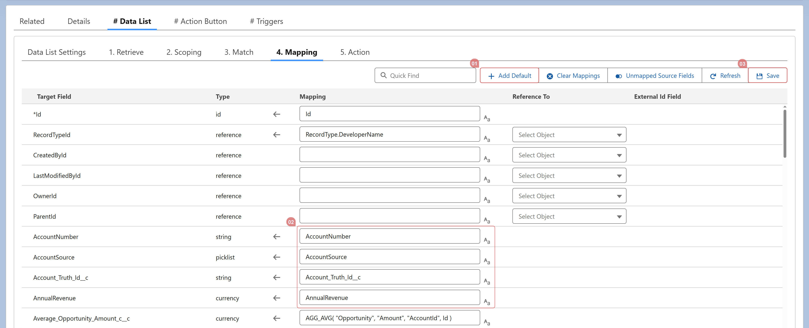

<article>
    <p>
      Clicking the "Add Default" button automatically maps any 
      unmapped target fields to source fields with the same name and a 
      compatible data type.
    </p>
    <p>
      After auto-mapping, click "Save" to apply the suggested mappings.
    </p>
  </article>
  
  